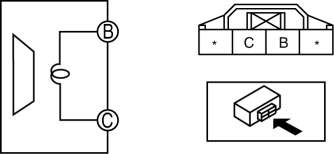

< Previous
Next >
2014 -
Mazda6 -
Body and Accessories
REAR DOOR SPEAKER INSPECTION
1. Disconnect the negative battery cable. (See NEGATIVE BATTERY CABLE DISCONNECTION/CONNECTION [SKYACTIV-G 2.5].)
2. Remove the rear door trim. (See REAR DOOR TRIM REMOVAL/INSTALLATION.)
3. Disconnect the rear door speaker connector. (See REAR DOOR SPEAKER REMOVAL/INSTALLATION.)
4. Verify that the resistance between the rear door speaker terminals is as indicated in the table.

< Previous
Next >
© 2012 Mazda North American Operations, U.S.A.